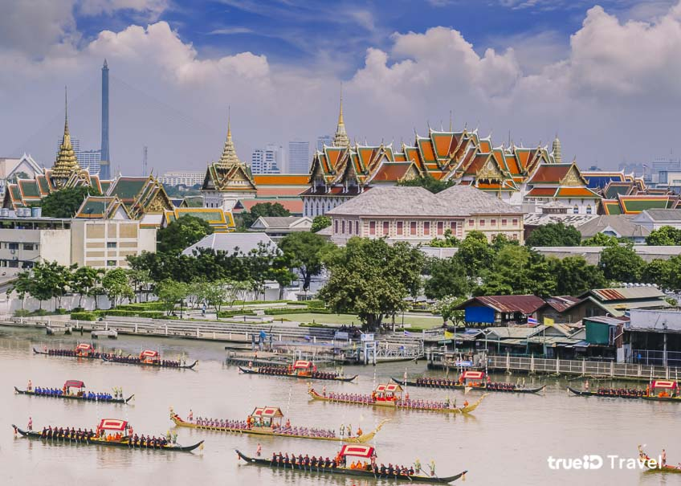

|  | ประวัติกรุงเทพมหานคร ในสมัยกรุงศรีอยุธยานั่น กรุงเทพฯ ยังเป็นเพียงเมืองการค้าขนาดเล็ก อยู่ที่ปากแม่น้ำเจ้าพระยา แต่ต่อมาหลังจากการสถาปนาเมืองหลวงใหม่ หลังสิ้นรัชสมัยของ สมเด็จพระเจ้าตากสิน หรือ พระเจ้ากรุงธนบุรี ได้มีการสถาปนา กรุงรัตนโกสินทร์ ขึ้นเป็น นครหลวงกรุงเทพธนบุรี |
 |
กรุงเทพมหานครเป็นเมืองที่มีตึกระฟ้ามากที่สุดเป็นอันดับที่ 11 ของโลกในปี พ.ศ. 2563[4] มีสถานที่ท่องเที่ยวหลากหลายในหลายรูปแบบทั้งด้านศาสนา ด้านศิลปวัฒนธรรม เช่น พระบรมมหาราชวัง ด้านการจับจ่ายซื้อของ ศูนย์การค้าต่าง ๆ หรือสถานบริการกลางคืน เช่น สยามสแควร์ ถนนข้าวสาร ที่ดึงดูดนักท่องเที่ยวต่างชาติได้อย่างมากมาย โดยในปี พ.ศ. 2562 นิตยสารฟอบส์ นิตยสารเกี่ยวกับธุรกิจและการเงินชื่อดังสัญชาติอเมริกา ได้จัดอันดับกรุงเทพมหานครเป็นเมืองที่มีนักท่องเที่ยวต่างชาติมากเป็นลำดับที่ 1 ของโลก โดยมีนักเดินทางเข้ามากว่า 22.78 ล้านคนและทำรายได้จากนักท่องเที่ยว ต่างชาติมากกว่า 2,003 ล้านดอลลาร์สหรัฐ มากเป็นลำดับที่ 3 ของโลก รองจากดูไบและมักกะฮ์ตามลำดับ |
กรุงเทพมหานครเป็นองค์กรปกครองส่วนท้องถิ่นรูปแบบพิเศษของประเทศไทย มิได้มีสถานะเป็นจังหวัด คำว่า "กรุงเทพมหานคร" นั้นยังใช้เรียกองค์กรปกครองส่วนท้องถิ่นของกรุงเทพมหานครอีกด้วย มีโครงสร้างประกอบด้วยสภากรุงเทพมหานครและผู้ว่าราชการกรุงเทพมหานคร กรุงเทพมหานครมีการเลือกตั้งผู้บริหารท้องถิ่นโดยตรง |